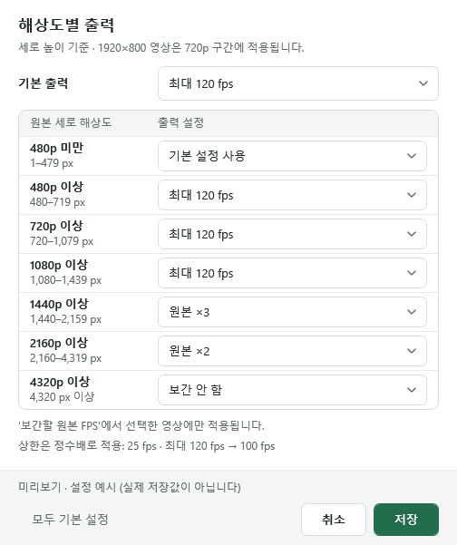
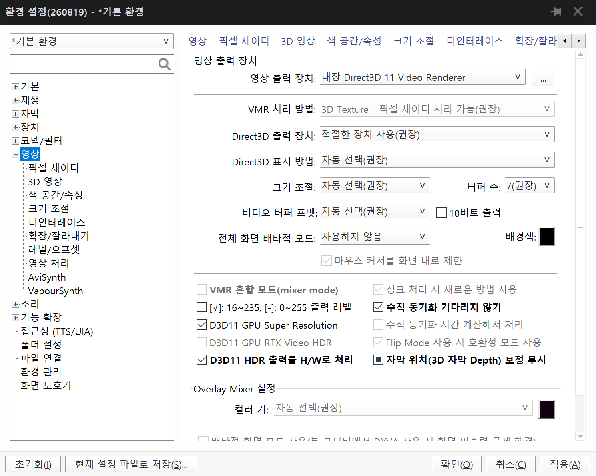

8K 60p ×4 지원
8K HDR 영상을 240fps로.
NVOF for PotPlayer 사용 설명서
RTX 5090 실제 재생 확인. 설정 방법과 초기 드랍 등 확인 범위
0.4.12에서 달라진 점
HEVC·AV1 영상에서 10비트 출력을 켰을 때 원본 FPS를 두 배로 잘못 인식하거나 GPU 디코딩·보간 연결이 끊기는 문제를 수정했습니다. 실제 인터레이스 처리, 보간 화질과 재생·탐색 방식은 유지합니다.
일반 출력과 해상도별 출력에 최대 160fps도 추가했습니다. 기존 설정은 유지됩니다.
시작하기 전에
- Windows 10 2004 이상 또는 Windows 11, x64
- 팟플레이어 x64
- Optical Flow를 지원하는 NVIDIA GPU와 드라이버
실제 재생 검증은 RTX 5090에서 진행했습니다. 처리 가능한 해상도와 출력 FPS는 GPU와 재생 설정에 따라 달라집니다.
필터·설정창·.NET/WPF 런타임이 ZIP에 들어 있습니다. .NET이나 CUDA Toolkit을 별도로 설치할 필요가 없습니다. 팟플레이어와 NVIDIA 드라이버는 따로 준비하세요.
압축 풀고 시작하기
스탠드얼론 ZIP NvofPotPlayer-0.4.12-win-x64.zip에 필터·설정창·필요한 런타임을 함께 제공합니다.
계속 사용할 폴더에 압축을 풉니다
실행 파일·필터·런타임 파일을 함께 둡니다. 기존 폴더를 업데이트한다면 먼저 팟플레이어와 설정창을 닫고 설정 파일을 보관하세요.
설정창에서 필터를 등록합니다
NvofControl.exe를 열고 연결 설정 → 필터 등록을 누릅니다. 일반 권한 팟플레이어에는 현재 사용자용 등록을 사용합니다.팟플레이어에 연결합니다
다음 안내에 따라 필터를 추가하고 영상을 다시 엽니다. 폴더 위치는 현재 폴더 열기로 확인합니다.
GPU 드라이버와 팟플레이어는 별도입니다. 실행 파일은 코드 서명되지 않았습니다.
팟플레이어 연결
필터 등록 후 팟플레이어의 필터 목록에도 직접 추가해야 합니다. 이 과정은 처음 한 번만 하면 됩니다.
필터 목록을 엽니다
팟플레이어에서 F5 → 코덱/필터 → 전역 필터 우선 순위로 이동합니다.
NVOF 필터를 추가합니다
시스템 코덱 추가에서 NVIDIA Optical Flow for PotPlayer를 선택해 추가합니다. 목록의 체크를 켜고 최우선 사용으로 설정합니다.
다른 보간 필터를 해제합니다
Smootter용 VapourSynth, Bluesky Frame Rate Converter 등 다른 보간 필터와 동시에 사용하지 않습니다.
디코딩·출력 설정으로 이어갑니다
필터를 추가한 뒤 아래 디코딩·출력 설정까지 진행합니다. 보간 설정창은 등록한 필터를 더블클릭해 설정 창 열기를 누르거나, 폴더의 NvofControl.exe로 열 수 있습니다.

팟플레이어를 관리자 권한으로 실행하고 있다면
일반 권한으로 실행하는 구성이 가장 간단합니다. 관리자 실행이 필요하다면 NVOF의 연결 설정 탭에서 관리자용 등록을 진행합니다. 이때만 Windows 권한 승인이 필요합니다. 관리자용 등록은 연결 설정의 필터 등록 해제에서 Windows 권한 승인을 받아 해제합니다.
디코딩·출력 설정
필터 연결 후, 첫 재생 전에 설정하세요. 내장 디코더와 D3D11 렌더러를 사용해 영상을 GPU 메모리로 직접 전달하는 구성입니다. 하드웨어 디코딩이 가능한 영상에 권장합니다. 네이티브 DXVA는 필수가 아닙니다. 소프트웨어 디코딩을 사용해도 NV12 SDR과 지원되는 10bit 입력은 CPU → GPU 경로로 보간합니다. 아래 DXVA 항목은 하드웨어 디코딩을 사용할 때의 권장값입니다. 내장 D3D11 렌더러는 두 경로 모두에 사용합니다.
내장 비디오 코덱 설정을 엽니다
팟플레이어 F5 → 코덱/필터 → 비디오 코덱 → 내장 코덱/DXVA 설정으로 이동합니다.
하드웨어 가속 항목을 설정합니다
오른쪽 하드웨어 가속(DXVA) 설정에서 아래 항목을 확인합니다. 팟플레이어 버전에 따라 문구나 배치가 조금 다를 수 있습니다.
확인된 내장 디코더 구성 항목 선택할 값 하드웨어 가속(DXVA)을 사용합니다 켬 D3D11 DXVA 우선 사용 켬
내장 D3D11 렌더러에서 사용하는 조건부 상태(■)도 확인된 구성입니다.FFmpeg DXVA 디코더 사용 끔 · 아래 화면의 내장 DXVA 구성 기준 DXVA2 Copy-Back 사용하지 않음(권장) 내장 D3D11 영상 출력 장치를 선택합니다
확인을 눌러 코덱 설정을 닫고, F5 → 영상 → 영상 출력 장치에서 내장 Direct3D 11 영상 출력 장치를 선택합니다.
영상을 다시 열고 전달 경로를 확인합니다
NVOF 설정창의 진단 탭에서 GPU 메모리로 직접 전달인지 확인합니다. 팟플레이어 재생 정보에서 디코더도 Native D3D11인지 확인하세요. H/W 표시만으로 판단하지 마세요. 10bit·HDR 영상은 입력·출력 P010 · 10bit도 확인합니다.

이 설정은 팟플레이어에서 직접 바꿉니다. NVOF의 필터 등록만으로 디코더·렌더러 설정까지 변경되지는 않습니다.
인터레이스 영상: 팟플레이어 디인터레이스 끄기
소프트웨어로 디코딩되는 인터레이스 영상(예: 1080i 10bit)을 NVOF로 보간할 때는 아래와 같이 설정하세요.
재생 화면 우클릭 → 영상 → 디인터레이스 → 사용하지 않음
설정 후 영상을 다시 엽니다. NVOF가 원본 필드를 받아 GPU에서 디인터레이스한 뒤 보간합니다.
왜 꺼야 하나요?
인터레이스 영상의 홀수 줄과 짝수 줄에는 서로 다른 시점의 움직임이 담겨 있습니다. 팟플레이어가 먼저 이 줄들을 섞어 한 장으로 만들면, 윤곽이 겹치거나 움직임 정보가 줄어들 수 있습니다. 이 상태에서는 NVOF의 움직임 추정이 어려워져 보간이 불규칙해질 수 있습니다.
팟플레이어의 디인터레이스를 끄면 NVOF가 원본 필드의 시간 순서를 살려 처리할 수 있습니다. 디인터레이스를 생략하는 것이 아니라, NVOF가 직접 처리하도록 맡기는 설정입니다.

프레임률은 어떻게 계산하나요?
25fps 인터레이스 영상에 초당 50개 시점의 필드가 있다면, NVOF는 먼저 50p로 만든 뒤 보간합니다. 이 경우 최대 120fps 설정의 출력은 100fps(50 ×2)입니다. 일반적인 25p 영상에 적용되는 ×4와는 입력 단계가 다릅니다.
이 안내는 현재 지원하는 CPU 10bit 인터레이스 입력 경로 기준입니다. 일반 프로그레시브 영상에는 이 과정이 필요하지 않습니다. NVOF를 해제하고 인터레이스 영상을 재생할 때는 팟플레이어를 다시 자동 판단으로 돌려놓으세요.
보간 설정
상단의 프레임 보간을 켠 뒤, 보간할 영상과 출력 방식을 선택합니다. 변경 사항은 영상을 다시 열면 적용됩니다.


보간할 원본 FPS
24 / 25 / 30 / 50 / 60 / 기타 중 선택합니다. 23.976, 29.97, 59.94fps는 각각 24, 30, 60에 포함됩니다. 선택하지 않은 영상은 원본 FPS로 재생합니다.
세로 해상도
전체 / 1080p 이하 / 1440p 이하 중 선택합니다. 영상의 세로 픽셀 수를 기준으로 하며, 선택한 높이를 넘는 영상은 원본 FPS로 재생합니다. 예를 들어 1080p 이하를 고르면 1920×1080 영상은 보간하고 3840×2160 영상은 그대로 재생합니다. 화면 크기나 모니터 해상도 기준이 아닙니다.
출력 방식: FPS 상한
60 / 72 / 75 / 100 / 120 / 144 / 160 / 240fps 중 선택합니다. 상한 안에서 가능한 가장 큰 정수배로 보간합니다. 기본값은 최대 60fps입니다. 최대 160fps에서는 24fps → 144fps, 30fps → 150fps, 60fps → 120fps로 출력합니다. 상한 안에서 두 배로 늘릴 수 없으면 원본으로 재생하며, 상한보다 빠른 원본의 프레임을 줄이지 않습니다.
출력 방식: 원본 배수
×2 / ×3 / ×4 / ×5를 직접 선택합니다. 이 모드에서는 FPS 상한을 적용하지 않습니다. FPS 상한과 원본 배수의 마지막 선택은 각각 기억합니다. 원본 FPS·세로 해상도 조건은 모든 출력 방식에 적용됩니다. 해상도별 설정에서는 구간마다 출력 방식을 따로 지정할 수 있습니다.
‘최대 60fps’가 모든 영상을 60fps로 바꾸는 것은 아닙니다.
24fps 영상은 최대 60fps에서 48fps입니다. 72fps로 보려면 최대 72fps 또는 원본 ×3을 선택하세요.
| 원본 | 최대 60 | 최대 72 | 최대 120 | 최대 240 | 원본 ×3 |
|---|---|---|---|---|---|
| 23.976 | 47.952 | 71.928 | 119.880 | 239.760 | 71.928 |
| 24 | 48 | 72 | 120 | 240 | 72 |
| 25 | 50 | 50 | 100 | 225 | 75 |
| 30 | 60 | 60 | 120 | 240 | 90 |
| 50 | 50 · 원본 | 50 · 원본 | 100 | 200 | 150 |
| 60 | 60 · 원본 | 60 · 원본 | 120 | 240 | 180 |
30.003fps처럼 표준값과 조금 다른 영상은 상한 계산에서 0.1%까지 허용합니다. 최대 60fps에서는 ×2 → 60.006fps, 최대 120fps에서는 ×4 → 120.012fps로 재생하며 원본의 재생 시간은 바꾸지 않습니다.
×3·×5도 서로 다른 중간 프레임을 만드나요?
네. ×3은 원본 두 장 사이의 1/3·2/3 시점, ×5는 20·40·60·80% 시점에 각각 중간 프레임을 만듭니다. 같은 프레임을 반복하는 방식이 아닙니다. 높은 출력 FPS일수록 처리량이 늘어나므로 팟플레이어의 실제 렌더링 FPS와 프레임 누락도 함께 확인하세요.
해상도별 출력 설정
낮은 해상도에는 높은 FPS를, 큰 영상에는 낮은 배수를 지정할 수 있습니다. 영상의 세로 픽셀 수로 구간을 선택하며, 화면 크기나 파일 이름의 1080p·4K 표시는 사용하지 않습니다.
출력 방식을 바꿉니다
보간 설정 → 출력 방식 → 해상도별 설정을 선택하고 설정 버튼을 누릅니다.
기본 출력과 구간별 예외를 정합니다
기본 출력을 정한 뒤 필요한 행만 변경하세요. 각 행에서 기본 설정 사용, FPS 상한, 원본 ×2–×5, 보간 안 함을 고를 수 있습니다.
저장하고 영상을 다시 엽니다
저장을 눌러 편집한 값을 반영합니다. 취소·Esc·닫기는 편집 중인 값을 버립니다. 모두 기본 설정은 모든 행을 기본 출력으로 되돌리며, 저장해야 반영됩니다.


| 설정창의 행 | 적용되는 세로 높이 |
|---|---|
| 480p 미만 | 1–479 px |
| 480p 이상 | 480–719 px |
| 720p 이상 | 720–1,079 px |
| 1080p 이상 | 1,080–1,439 px |
| 1440p 이상 | 1,440–2,159 px |
| 2160p 이상 | 2,160–4,319 px |
| 4320p 이상 | 4,320 px 이상 |
1920×800 영상은 ‘720p 이상’ 행에 적용됩니다.
이 행을 최대 120fps로 지정하면 24fps 원본은 120fps, 25fps 원본은 100fps로 출력됩니다. FPS 상한은 여기서도 정수배로 계산합니다.
원본 FPS 선택과 세로 해상도 제한이 먼저 적용됩니다. 예를 들어 세로 해상도가 ‘1080p 이하’이면, 2160p 행을 설정해도 해당 영상은 보간하지 않습니다. 모든 구간을 사용하려면 세로 해상도를 ‘전체’로 선택하세요.
처음 설치하거나 기존 버전에서 업데이트하면 해상도별 설정은 꺼져 있으며 기존 출력 방식이 유지됩니다. 다른 출력 방식으로 바꿔도 저장한 구간별 값은 남습니다. 편집창에서 취소해도 바깥 설정창에서 선택한 출력 방식 자체는 되돌아가지 않습니다.
10bit SDR·HDR 영상
팟플레이어의 ‘10비트 출력’ 체크박스
F5 → 영상 → 비디오 버퍼 포맷 옆 ‘10비트 출력’을 말합니다. v0.4.12에서는 이 옵션을 켠 HEVC·AV1 프로그레시브 영상을 인터레이스로 잘못 판정하는 연결을 수정했습니다. 옵션이나 기존 설정을 강제로 바꾸지 않습니다. 업데이트 후 팟플레이어를 완전히 종료하고 영상을 다시 여세요.
- HEVC 소프트웨어 디코딩: 23.976fps 원본을 47.952fps로 잘못 계산하던 경우를 바로잡습니다. 최대 120fps에서는 정상적으로 119.88fps를 선택합니다.
- AV1 하드웨어 디코딩: 호환 GPU·드라이버에서 내장 D3D11 DXVA와 P010 10bit 보간 연결을 유지합니다. 실제 디코더는 팟플레이어 Tab의 H/W·Native D3D11 DXVA 표시로 확인하고, NVOF 진단에서는 입력·출력 형식과 FPS를 확인하세요.
- 실제 인터레이스: 원본 헤더가 프로그레시브임을 확실히 뒷받침할 때만 보정합니다. 필드 영상이나 불완전·상충하는 헤더는 기존 방식으로 처리합니다.
10bit는 HDR을 켜는 기능이 아닙니다. 화면 밝기·톤매핑은 플레이어와 렌더러 설정도 함께 확인하세요. 이 수정은 HDR 과밝기 문제의 해결을 뜻하지 않습니다. 수정 및 검증 범위
SW로 시작하거나 HW에서 SW로 바꾼 HDR 영상
v0.4.7은 지원되는 디코더에 P010 출력을 요청합니다. 전환 후 진단에서 실제 입력·출력 P010 · 10bit와 HDR10 / HLG를 확인하세요. NV12로 들어온 데이터를 10bit로 복원하는 기능은 아닙니다. 디코더가 Dolby 메타데이터를 주지 않으면 이를 만들어 내지 않으며, HDR10 표시는 Dolby Vision 화면 출력을 뜻하지 않습니다.
10bit는 색의 정밀도이며 HDR 여부와는 별개입니다. H.264 10bit SDR도 보간할 수 있습니다. 진단에서 입력 형식과 출력 P010 · 10bit, 색 형식 SDR / HDR10 / HLG를 확인하세요.
| 영상 입력 | 처리와 출력 |
|---|---|
| 8bit SDR · NV12 | 8bit NV12로 출력합니다. CPU 디코딩 입력도 GPU로 올려 보간하고, 호환 D3D11 렌더러에 GPU 프레임으로 전달합니다. |
| GPU 디코딩 · P010 | GPU 메모리에서 원본과 중간 프레임을 10bit로 유지합니다. |
| CPU 디코딩 · 10bit | P010 / P016 / P210 / Y210 입력을 GPU로 올려 변환·보간한 뒤 P010으로 출력합니다. 팟플레이어가 S/W로 표시되어도 보간은 GPU에서 동작합니다. |
| HDR10 · BT.2020 PQ | P010 10bit와 색 정보, 제공된 HDR 정적 메타데이터를 전달합니다. HEVC·AV1에 더해 VP9의 누락된 HDR 색 정보를 복구합니다. |
| HLG · BT.2020 | P010 10bit와 HLG 색 정보를 전달합니다. |
하드웨어 디코딩이 가능한 영상은 네이티브 D3D11 경로를 사용하세요. 지원되지 않는 H.264 10bit 등은 CPU가 디코딩하고 NVOF가 GPU에서 보간합니다. 내장 D3D11 렌더러와 NVIDIA GPU는 계속 필요합니다. 인터레이스 입력은 디인터레이스 설정도 확인하세요.
10bit 원본 파일과 디코더 출력은 다를 수 있습니다.
디코더가 NV12로 넘기면 NVOF에는 8bit로 들어옵니다. 이 경우 손실된 10bit 정밀도를 되살리지 않습니다. 진단의 실제 입력·출력 형식을 확인하세요. 팟플레이어의 NV12(12 bit)는 12bit 색 정밀도라는 뜻이 아닙니다.
10bit와 4:2:2는 모두 유지되나요?
지원 경로의 출력은 10bit 4:2:0 P010입니다. P210/Y210의 4:2:2 색차는 GPU에서 4:2:0으로 변환합니다. 디코더가 이미 P010으로 전달하면 그 전에 줄어든 색차 정보는 복원하지 않습니다. P016은 상위 10bit를 사용하므로 16bit 보존 경로는 아닙니다.
돌비 비전은 어디까지 지원하나요?
디코더가 제공하는 Dolby Vision RPU와 해석된 메타데이터를 렌더러로 전달합니다. 원본 프레임은 자신의 정보를, 중간 프레임은 앞선 원본 프레임의 정보를 사용합니다. Profile 8.1 소스에서 실제 메타데이터 전달을 확인했습니다.
돌비 비전 해석·톤매핑·화면 출력은 디코더와 렌더러가 담당합니다. 모든 프로파일이나 돌비 비전 화면 출력을 보장하는 기능은 아니며, HDR10 호환 기본 영상은 진단에 HDR10으로 표시될 수 있습니다. HDR10+ 동적 메타데이터는 지원하지 않습니다.
HDR10 파일과 YouTube AV1·VP9 HDR의 정상 색상을 실제 재생에서 확인했습니다. HEVC HLG는 실제 재생과 신호 전달을 확인했으며 별도의 화면 색상 비교는 남아 있습니다. 필터는 HDR 톤매핑이나 모니터 HDR 전환을 수행하지 않습니다.
Windows HDR를 켜고 감상할 때
F5 → 영상 → D3D11 HDR 출력을 H/W로 처리를 체크(✓)로 설정하고 영상을 다시 여세요. 검은 네모(자동)와 체크는 다른 상태입니다. 로컬 비교에서는 이 설정으로 YouTube와의 밝기 차이 및 자동 상태에서의 10bit SDR 과채도가 정상으로 돌아왔습니다. 필터가 색을 보정한 결과는 아닙니다. Windows HDR를 끄고 SDR 화면에서 감상한다면 별도의 SDR 톤매핑 안내를 따르세요.
VSR 함께 사용하기
VSR은 선택 사항입니다. 디코딩·출력 설정을 마친 뒤, 원하는 경우 팟플레이어의 GPU Super Resolution을 켭니다.
VSR도 GPU를 사용합니다. 높은 출력 FPS에서 프레임이 누락되면 VSR을 끈 상태와 비교해 보세요.
재생 성능과 드랍 확인
0.4.9부터 디코더 입력을 받는 작업과 보간·출력 작업을 분리했습니다. 네이티브 GPU 입력의 1080p·4K·8K에 공통 적용되며, 일시정지 후 재개할 때 기존 보간 세션을 유지합니다.
높은 출력 FPS에서는 미리 계산된 프레임을 보관할 여유를 늘리고, GPU 완료를 기다리는 동안 준비된 출력을 전달합니다. 첫 화면 전에 버퍼를 채우는 대기는 추가하지 않았습니다.
| 구간 | 현재 상태 |
|---|---|
| 연속 재생 | RTX 5090의 최신 8K HDR 60fps ×4 시험에서, 상세 진단을 켠 상태로 초기 드랍 이후 1분간 추가 드랍이 없었습니다. 시작 15초 이후 로그는 239.15~241.17fps 전달과 출력 시각 누락·중복 0건을 기록했습니다. 이전 시험에서 소량의 누적 드랍도 있었으므로 모든 영상의 무드랍을 보증하지 않습니다. |
| 처음 재생 | 시작 직후 큰 드랍은 아직 남아 있습니다. 첫 화면을 늦추지 않는 추가 개선은 장기 과제로 유지합니다. |
| 탐색·재개 | 연속 탐색의 앞뒤 튐과 일시정지 후 재개 시 심한 끊김을 개선했습니다. 0.4.11은 이동 후 보간 재개도 앞당깁니다. 탐색 직후 소량의 드랍은 남을 수 있습니다. |
8K 60p ×4 설정
보간할 원본 FPS에서 60을 선택하고, 출력을 원본 ×4 또는 최대 240fps로 지정하세요. 8K만 적용하려면 해상도별 출력의 4320p 이상을 원본 ×4로 설정합니다. 프레임 보간을 켜고 세로 해상도는 전체로 둡니다.
출력 FPS는 화면과 함께 맞추세요
240fps는 처리 성능을 확인하는 설정입니다. 165Hz 화면이 240장의 서로 다른 프레임을 모두 표시하지는 못합니다. 실제 감상은 화면 주사율과 GPU 여유에 맞춰 120·144fps 등의 상한을 선택하세요. 24fps에 240fps 상한을 선택하면 ×10, 60fps에 원본 ×4를 선택하면 240fps입니다.
드랍은 시작·탐색 직후와 연속 재생을 나눠 확인하세요. 출력 FPS 표시의 순간 변동만으로 보간 배수가 바뀌었다고 판단하지 마세요. VSR, 디코딩, 렌더러와 화면 주사율도 영향을 줍니다.
끊기거나 드랍이 늘면 수직 동기화 설정 비교하기
F5 → 영상에서 수직 동기화 기다리지 않기를 확인하세요. 재생 성능에 문제가 있으면 이 항목을 체크(✓) 또는 중간 상태(-)로 바꿔 비교해 보세요.
- 현재 상태를 기억해 둡니다.
- 체크(✓)와 중간 상태(-)를 각각 선택해 적용하고 영상을 다시 엽니다.
- 같은 영상·같은 구간·같은 보간 배수에서 끊김과 드랍 증가량을 비교하고, 더 안정적인 상태를 사용합니다.
옵션 이름은 ‘기다리기’가 아니라 ‘기다리지 않기’입니다. 체크 상태가 기다리지 않는 선택입니다. 효과는 GPU·렌더러·화면 설정에 따라 달라질 수 있으므로 모든 드랍의 해결을 보장하지는 않습니다.


진단 로그는 필요할 때만 켜기
일반 재생의 기본값은 TracePerformance=0, ProbeServices=0입니다. 8K 고배수 재생에서는 상세 측정 자체가 드랍에 영향을 줄 수 있습니다. 설정창의 상태 표시와 기본 시작·종료·오류 기록은 유지됩니다.
- 팟플레이어를 완전히 종료합니다.
- 필터와 같은 폴더의
NvofPotPlayer.ini에서[Nvof]아래 값을 수정합니다.TracePerformance=1은 CPU 시간·주기적 성능 기록,2는 GPU 상세 시간 측정까지 켭니다. 연결 문제를 조사할 때만ProbeServices=1을 사용합니다. - 짧게 재현한 뒤 종료하고 두 값을
0으로 되돌립니다. 다음 실행부터 반영됩니다.
기존 설정 파일을 보존해 업데이트했다면 두 값을 직접 확인하세요. 로그는 %LOCALAPPDATA%\NvofPotPlayer에 저장되며 자동 전송하지 않습니다.
동작 확인
선택한 FPS의 영상을 다시 엽니다
예를 들어 원본 23.976 fps 영상은 24 그룹이 선택되어 있어야 합니다.
설정창 상단의 실제 상태를 봅니다
프레임 보간 동작 중과 23.976 → 47.952 fps 같은 표시를 확인합니다. 스위치가 켜져 있다는 것과 실제 보간 중이라는 것은 별개입니다.
진단 탭에서 전달 경로를 확인합니다
GPU 메모리로 직접 전달은 필터의 GPU 전달 상태입니다. CPU로 디코딩한 뒤 GPU로 올리는 경우도 있으므로, 디코딩 방식은 팟플레이어 재생 정보에서 함께 확인하세요. CPU 10bit 영상은 P010 출력과 보간 FPS를 확인합니다.
탐색과 종료를 확인합니다
앞뒤로 이동한 뒤 정상 재생되는지 확인합니다. 탐색 후에는 이전 위치의 보간 이력을 버리고 새 위치에서 시작합니다. 사용을 마친 뒤 정상 종료되는지도 확인하세요.
NVOF 자체 상태 문구는 영상 위에 표시되지 않습니다. VSR 표시나 팟플레이어의 재생 정보는 각각의 프로그램 설정입니다.
문제 해결
끊김이나 드랍이 늘면 수직 동기화 기다리지 않기 설정 비교도 확인하세요.
인터레이스 영상의 끊김은 디인터레이스 설정부터 확인하세요.
한 번에 여러 설정을 바꾸기보다, 아래 증상에 해당하는 항목부터 확인하세요.
이동한 뒤 보간이 늦게 재개돼요
0.4.11은 방향키·재생바로 이동한 뒤 원본 FPS로 지나가는 구간을 줄였습니다. 첫 화면은 즉시 전달하며, 연속 탐색 때 앞뒤로 튀는 현상을 막는 보호도 유지합니다.
자동 검사에서 원본으로 지나간 구간은 24p 약 0.125초, 60p 약 0.10초였습니다. 프레임 준비와 화면 표시 시간은 별도이므로 실제 체감 시간이 이 수치와 같다는 뜻은 아닙니다. 업데이트 후 팟플레이어를 완전히 종료하고 다시 실행하세요. 변경과 검증 범위
해상도별 설정이 적용되지 않아요
출력 방식이 해상도별 설정인지, 편집창에서 저장했는지 확인한 뒤 영상을 다시 여세요. 원본 FPS 선택과 세로 해상도 제한이 우선입니다. 해당 행이 기본 설정 사용이면 편집창 위쪽의 기본 출력을 따릅니다.
SDR 모드에서 HDR 영상이 너무 밝거나 톤매핑 설정이 반응하지 않아요
Windows와 모니터를 SDR 모드로 사용하면서 PQ HDR 영상을 볼 때는 아래 설정부터 비교하세요.
- 환경 설정 → 영상 → D3D11 HDR 출력을 H/W로 처리를 끕니다.
- 영상 → 픽셀 셰이더 → HDR SMPTE ST 2084 자동 보정을 켭니다.
- 톤매핑은 Auto(권장), SDR 모니터 휘도는 125 nits에서 시작해 같은 장면을 비교합니다. ST 2086 보정은 이 확인에 필요하지 않았습니다.
로컬 Dune 비교에서는 NVOF를 제외해도 밝은 부분이 뭉개졌고, HW/SW 디코딩을 바꾸거나 톤매핑 종류·SDR 휘도를 조절해도 차이가 없었습니다. HDR H/W 출력 옵션을 끄자 설정이 반응했으며, Auto·125 nits 그대로 밝은 부분의 디테일이 돌아왔다고 사용자가 확인했습니다.
HDR H/W 출력과 HW 디코딩은 별개입니다. 이 출력 옵션을 꺼도 HW 디코딩과 GPU 보간을 사용할 수 있습니다. 125 nits는 비교 시작값이며 모니터의 실측 밝기를 뜻하지 않습니다. 이 안내는 SDR 감상용으로, 실제 HDR 화면 출력에 일괄 적용하지 마세요.
내장 GPU가 있는 PC에서 HW→SW 전환 시 멈춰요
현재 버전은 렌더러가 전달한 GPU 번호를 검증하고, 전환 전에 사용하던 NVIDIA GPU를 유지합니다. SW로 처음 시작할 때도 잘못된 GPU 번호를 그대로 사용하지 않습니다. 내장 GPU를 끄거나 기존 GPU 설정을 바꾸지 않아도 됩니다.
- 팟플레이어와 NVOF 설정창을 닫고 설치 폴더를 백업합니다.
- v0.4.12로 교체하되 기존
NvofPotPlayer.ini를 보존합니다. - 같은 영상을 다시 열고 HW↔SW 전환과 SW 최초 재생을 확인합니다.
RTX 5080 + AMD 내장 GPU 구성에서 수정본의 정상 동작을 확인했습니다. 다른 다중 GPU 구성까지 모두 검증한 것은 아닙니다. 계속 멈추면 GPU 구성, 전환 순서와 NVOF 진단 로그를 확인하세요.
저지연 모드·높은 FPS에서 프레임 누락이 늘어요
v0.4.7은 GPU 공유 잠금과 완료 대기, 출력 버퍼를 개선했습니다. RTX 5090의 HW·240fps·저지연 모드 켜기 조건에서 영상 창을 선택한 상태의 안정성을 확인했습니다. 저지연 모드를 끄는 것을 필수로 요구하지 않습니다.
NVIDIA 제어판의 팟플레이어 프로그램 설정에서 최대 프레임 속도와 백그라운드 최대 프레임 속도가 출력을 제한하는지 확인하세요. 다른 창을 선택한 상태는 별도로 비교합니다. 165Hz 화면에 240fps를 보내도 240개의 서로 다른 프레임을 모두 표시할 수는 없습니다. 주사율 안의 출력에서도 누락이 늘어나는지, 탐색 직후인지 연속 재생 중인지 구분하세요. 모든 GPU의 4K·240fps를 보장하지 않습니다.
조준선·머리카락·물체 경계가 깨져요
v0.4.7은 고정된 가는 가로·세로 선을 보호해 조준선 갈라짐을 줄였습니다. 모든 선이나 움직이는 물체를 구분하는 기능은 아닙니다. 루팡 총 주변처럼 물체가 배경을 가리는 경계의 깨짐은 아직 남아 있습니다. 전체 화면을 흐리거나 원본 프레임으로 고정하는 방식은 적용하지 않았습니다.
필터가 목록에 없거나 설정창이 열리지 않아요
- 팟플레이어 x64인지 확인합니다.
- NVOF 연결 설정에서 현재 폴더의 필터를 등록합니다.
- 팟플레이어를 완전히 종료했다가 다시 실행합니다.
- 팟플레이어가 관리자 권한이라면 관리자용 등록이 필요합니다.
스위치는 켜졌는데 보간이 안 돼요
팟플레이어의 필터 체크·최우선 사용, 원본 FPS 체크, 세로 해상도 조건을 확인한 뒤 영상을 다시 엽니다. FPS 상한 안에서 배수가 1이면 원본으로 재생합니다. 진단 탭에 원본 통과 이유가 있으면 먼저 그 내용을 확인하세요. 디코딩·출력 설정도 확인하세요. 10bit 영상은 출력이 P010인지 확인하세요. 소프트웨어 디코딩도 지원하며 내장 D3D11 렌더러가 필요합니다.
HW에서 SW로 바꾸면 되는데, 처음부터 SW로 열면 보간이 안 돼요
v0.4.6에서 SW 최초 연결 시 GPU 출력 준비가 늦어 필터가 연결되지 않던 문제를 수정했습니다. HW/SW 전환 멈춤 수정도 포함합니다.
- 팟플레이어와 NVOF 설정창을 완전히 종료하고 v0.4.12으로 업데이트합니다. 기존
NvofPotPlayer.ini는 보존하세요. - 내장 D3D11 렌더러를 선택하고, HW 가속을 끈 상태에서 영상을 다시 엽니다. HW를 먼저 켤 필요는 없습니다.
- 재생 중 필터 목록에 NVOF가 있는지, 설정창에 보간 동작과 출력 FPS가 표시되는지 확인합니다.
S/W는 CPU 디코딩 표시입니다. GPU에서 보간해도 S/W로 표시될 수 있습니다.
10비트 영상이 검게 나오거나 곧 멈춰요
v0.4.12로 업데이트한 뒤 팟플레이어를 완전히 종료했다가 다시 여세요. 내장 디코더·내장 D3D11 렌더러를 사용하는지 확인합니다. 진단에서 10bit 입력·출력이 P010인지도 확인하세요. 계속 발생하면 8비트 SDR 영상도 비교한 뒤 GPU·드라이버 버전, 진단 내용과 재현 순서를 알려주세요.
시작할 때 S/W였다가 H/W로 바뀌어요
그래프 연결과 초기화 중 표시가 달라질 수 있습니다. 재생이 안정된 뒤 진단의 전달 경로와 출력 FPS로 확인합니다. 초기 표시만으로 전체 재생이 소프트웨어 처리된다고 판단하지 마세요.
입이나 윤곽이 깨지거나 화면 이동이 끊겨요
다른 보간 필터를 모두 끄고 같은 장면을 비교합니다. NVOF를 끈 원본과 켠 보간 결과를 각각 영상을 다시 열어 비교하세요. 출력 배수를 낮추거나 FPS 상한을 바꿔 비교할 수 있습니다. 재현되는 시간, 원본 FPS·해상도, GPU/드라이버, VSR 사용 여부를 기록하면 원인을 좁히기 쉽습니다.
4K 영상에서 버벅여요
탐색·일시정지 직후의 드랍인지, 아무 조작 없이 연속 재생할 때도 드랍이 늘어나는지 구분해 주세요. 설정창의 출력 FPS는 목표이며 실제 화면 표시를 보장하는 수치가 아닙니다. 디코딩·보간·렌더러·VSR 부하를 함께 확인하세요. 팟플레이어 재생 정보(Tab)의 실제 FPS와 프레임 누락을 확인합니다. 출력 배수를 낮추거나 VSR을 잠시 끄고 비교해 보세요. 4K 영상을 보간에서 제외하려면 세로 해상도를 1080p 이하 또는 1440p 이하로 설정합니다.
색이 달라지거나 VSR이 동작하지 않아요
내장 D3D11 렌더러와 기존 색 범위 설정을 확인합니다. NVOF 필터를 해제한 뒤 같은 영상·같은 장면을 비교해 주세요. HEVC·AV1에 더해 일부 YouTube VP9 HDR 영상의 누락된 색 정보 전달을 수정했습니다. 진단에서 P010 · 10bit와 HDR10 또는 HLG를 확인하세요. 필터의 색 형식 표시와 실제 HDR 화면 출력은 구분해서 확인하세요.
HDR 색상이 붉거나 너무 진하고 밝아요
같은 장면에서 Windows HDR 상태, 팟플레이어의 HDR 출력·톤매핑, 모니터의 HDR/SDR 화면 모드와 색온도·채도를 함께 확인하세요. SDR 화면에서 HDR 영상을 볼 때의 ST 2084 보정은 HDR→SDR 표시 설정이며, 필터의 10bit 유지와는 별개입니다. 설정은 하나씩 바꾸어 비교하고 원래 값을 기록하세요.
- 창 모드와 전체화면에서 재생 정보(Tab)를 비교합니다.
- 전역 필터 우선순위에서 NVOF를 사용하지 않도록 하고 영상을 다시 엽니다. 보간 스위치만 끄면 필터가 남을 수 있습니다.
- 필터를 제외해도 같다면 플레이어·드라이버·모니터의 표시 설정을 먼저 비교합니다. 로컬 SDR 감상의 과밝기 증상은 HDR 출력 설정으로 해결됐습니다. 다른 색상 증상은 별도로 비교하세요.
이 결과가 모든 HDR 색상 제보의 원인을 확정하지는 않습니다. HDR 캡처만으로 실제 모니터의 색이나 밝기를 확정하지 마세요. 이번 버전에 색상 과포화 수정이 포함된 것은 아닙니다.
업데이트나 제거가 진행되지 않아요
팟플레이어와 설정창을 모두 닫아 주세요. 스탠드얼론 폴더는 필터 등록 해제 후 설정창을 닫고 삭제합니다. 관리자용 등록은 Windows 권한 승인을 요청합니다. 설치본은 프로그램 제거 버튼이나 Windows 설치된 앱을 사용합니다.
어떤 정보를 보내면 되나요?
NVOF 진단 내용, GPU·드라이버 버전, 영상 해상도·FPS·색 형식, 문제가 생기는 시각과 재현 순서를 전달하면 됩니다. 로그는 %LOCALAPPDATA%\NvofPotPlayer에 저장됩니다. 파일 경로 등 개인 정보가 포함됐는지 확인한 뒤 필요한 부분만 공유하세요. 프로그램이 진단을 자동 전송하지는 않습니다.
업데이트·이동·제거
스탠드얼론 업데이트
팟플레이어와 설정창을 닫고 기존 폴더를 백업합니다. 같은 위치에 새 파일을 넣을 때 NvofPotPlayer.ini는 보존하세요.
0.4.12 설정 유지
0.4.12는 기존 출력 설정을 유지하며, 해상도별 설정은 직접 선택해야 켜집니다. 정식 배포본에는 검증한 공통 튜닝값이 내장되어 있어 별도의 튜닝 파일이 필요하지 않습니다.
스탠드얼론 이동·제거
팟플레이어를 종료하고 연결 설정 → 필터 등록 해제를 누릅니다. 현재 폴더 소유의 사용자용·관리자용 등록을 해제합니다. 관리자용 등록이 있으면 Windows 권한 승인이 필요하며, 취소한 경우 해제 완료로 표시하지 않습니다.
성공을 확인한 뒤 설정창을 닫고 폴더를 이동하거나 삭제하세요. 이동했으면 새 위치에서 다시 등록합니다. 현재 폴더 열기로 위치를 확인할 수 있습니다. 등록 해제 버튼이 폴더를 삭제하지는 않습니다.
기존 설치본에서 전환
v0.3.0 등 설치 프로그램 버전은 NvofPotPlayer.ini를 백업하고 팟플레이어·설정창을 닫은 뒤 Windows 설치된 앱에서 제거합니다. 관리자용 등록이 있으면 Windows 권한 승인을 허용하세요. 새 ZIP을 별도 폴더에 풀고 필요한 설정을 복원한 후 필터를 등록합니다. 팟플레이어의 필터 선택과 최우선 사용도 다시 확인합니다.
같은 폴더의 제거 프로그램이 확인되면 프로그램 제거도 표시합니다. Windows 설치된 앱에서 제거할 수도 있습니다. 스탠드얼론에는 이 버튼을 표시하지 않습니다. 다른 폴더의 등록과 사용자 설정은 보존합니다.
지원 범위·약관
Windows 10 x64, RTX 5090, 팟플레이어 내장 디코더·D3D11 렌더러에서 검증했습니다. 제한 범위 BT.709 SDR과 BT.2020 PQ/HLG를 대상으로 합니다. CPU NV12 SDR의 SW 최초 재생·HW/SW 전환과 연속 재생, CPU 10bit 프로그레시브와 1080i 인터레이스 입력을 확인했습니다. RTX 5080 + AMD 내장 GPU 환경의 HW/SW 전환 수정도 확인했습니다. 모든 인터레이스 형식·텔레시네·다른 다중 GPU 구성에 대한 보장은 아닙니다.
머리카락·연기·겹친 움직임에는 아티팩트가 남을 수 있습니다. 높은 출력 FPS 선택이 모든 GPU에서 4K 실시간 재생을 보장하지는 않습니다. 연속 탐색 수정은 사용자 재생 확인을 마쳤습니다. 움직이는 물체의 가림 경계, 반복 무늬 및 할로 현상은 계속 개선 중이며 모든 장면에서 해결되지는 않았습니다.
필터·등록 도구·설정창·.NET/WPF를 포함합니다. FRUC·CUDA 런타임과 NVIDIA 드라이버, 팟플레이어는 배포하지 않습니다.
SW 디코딩·전환 검증 · CPU 10bit·인터레이스 검증 · VP9 HDR 검증 · 돌비 비전·HLG 검증 · 외부 구성요소 안내